Una aventura de rol, sin director de juego
Crea tu héroe, recluta aliados y adéntrate en minas, bosques, montañas y tumbas olvidadas. Cada sala esconde algo: combates tácticos, pruebas con dados y decisiones que cambian el camino.
Las reglas parten del SRD 5.2.1 de quinta edición, adaptadas para jugar tocando la pantalla.
- Pensado para el móvil en vertical, en Android o en el navegador.
- Con modo escritorio al abrirlo en el ordenador.
Así se juega
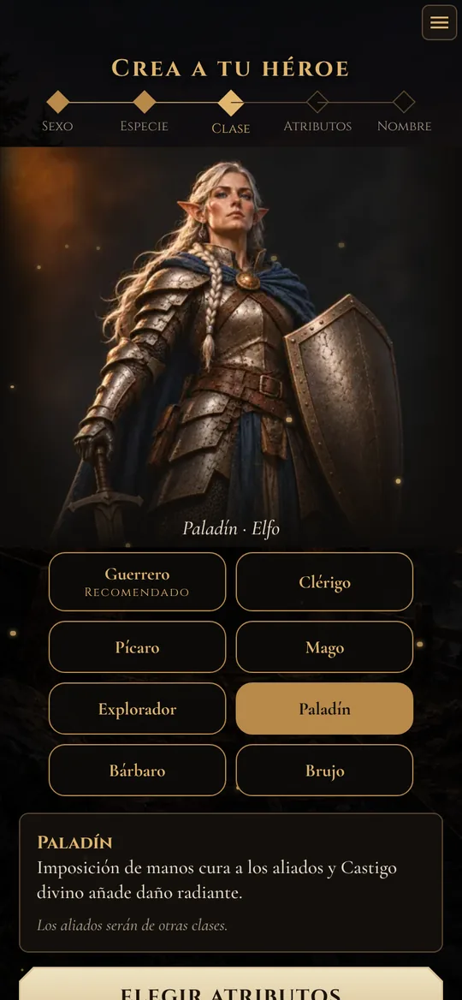
Crea tu héroe 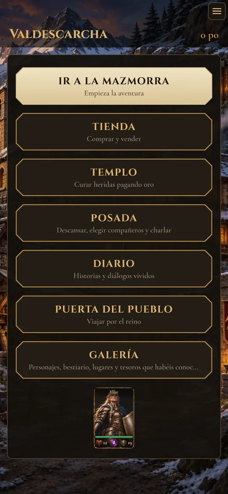
Prepárate en el pueblo 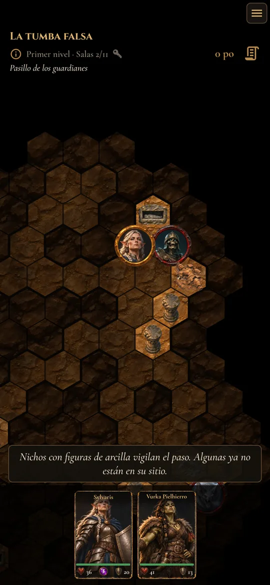
Explora el mapa 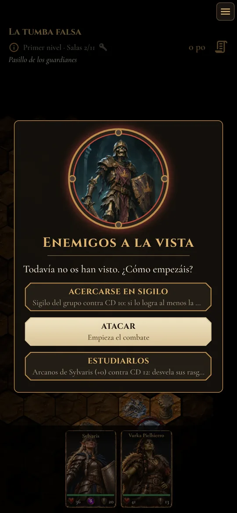
Elige cómo empezar 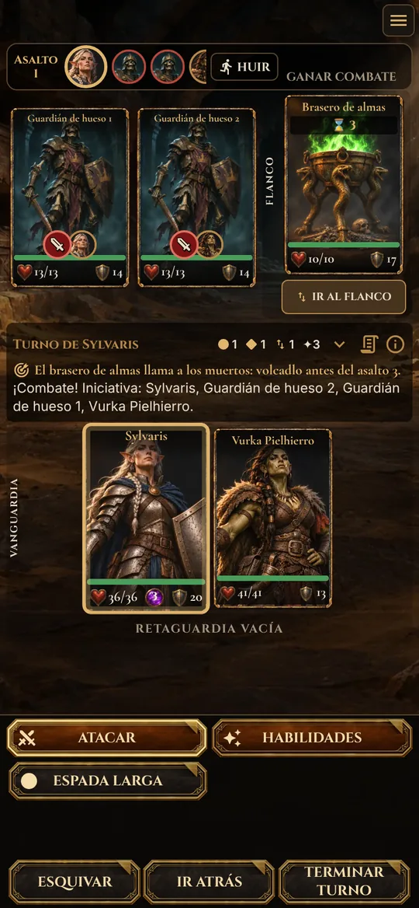
Combate por turnos 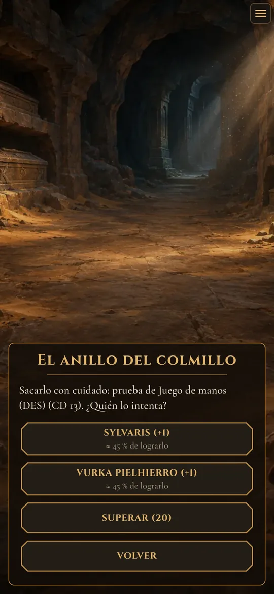
Decide y tira los dados
También en el ordenador
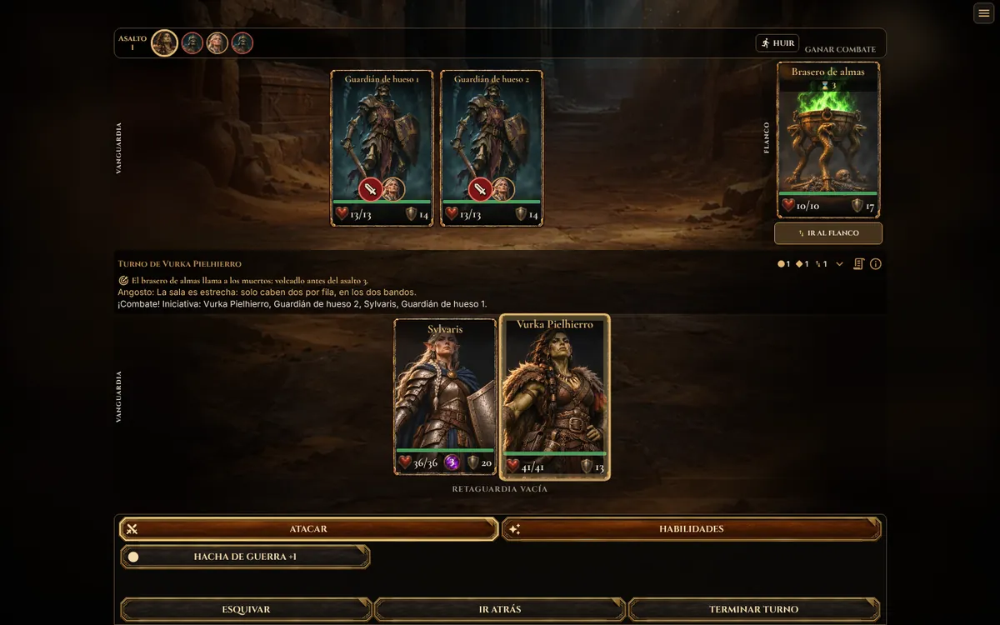
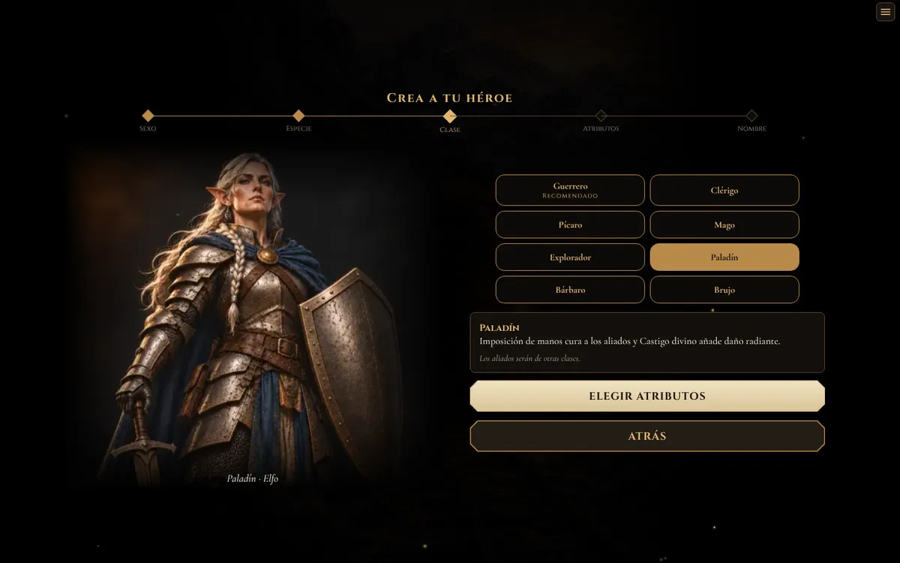
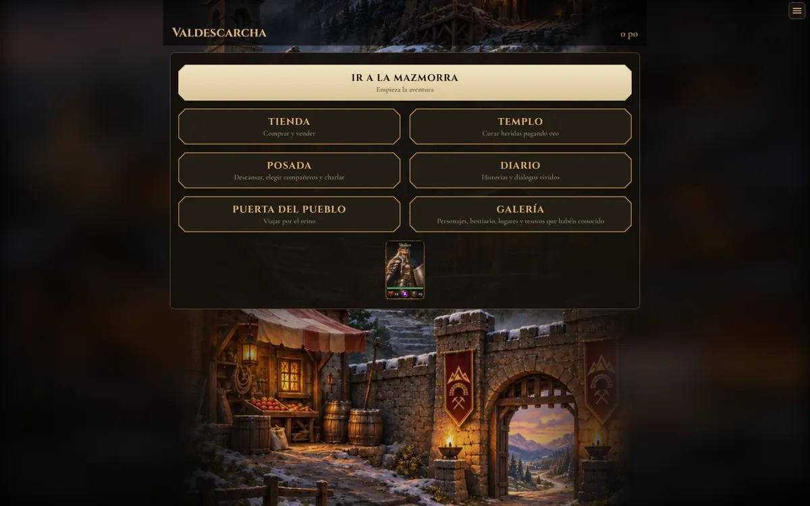
Cuatro aventuras te esperan
-
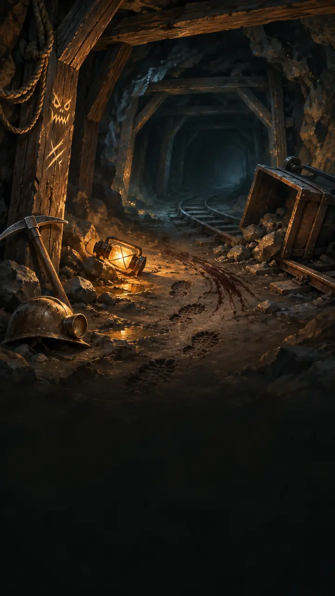
Las profundidades de Hondaroca
Minas abandonadas y ruinas enanas bajo Valdescarcha.
-
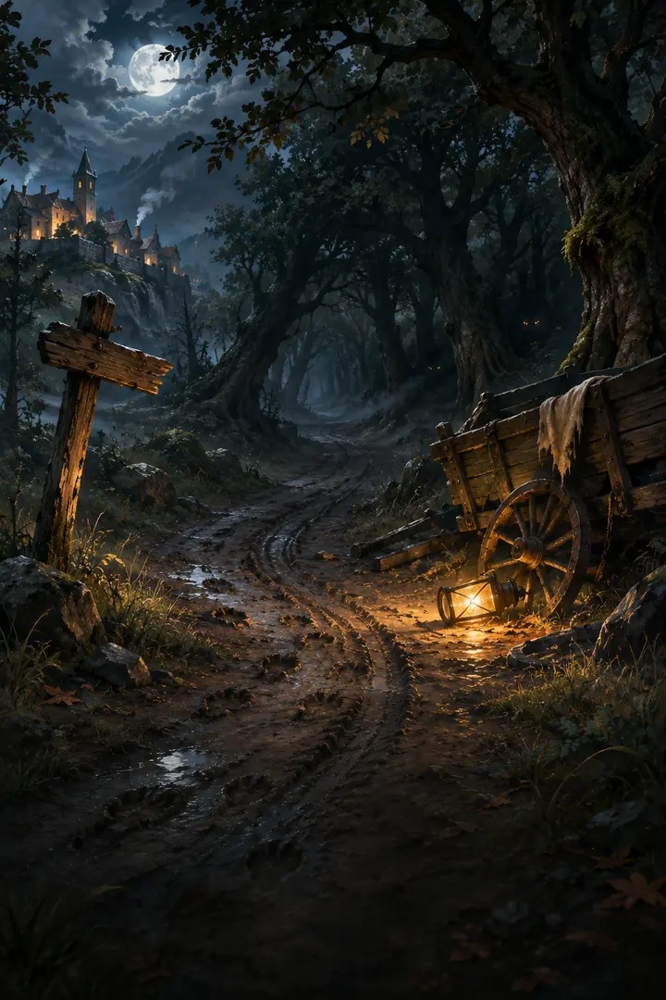
El Corazón Hueco
Un bosque que se ha vuelto hostil, junto a Vegaumbría.
-
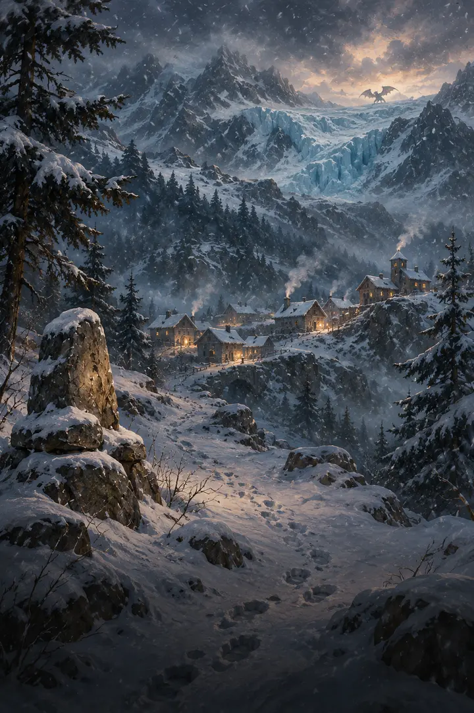
El Invierno del Dragón
Pasos nevados y una fortaleza enana sobre Cumbrenieve.
-
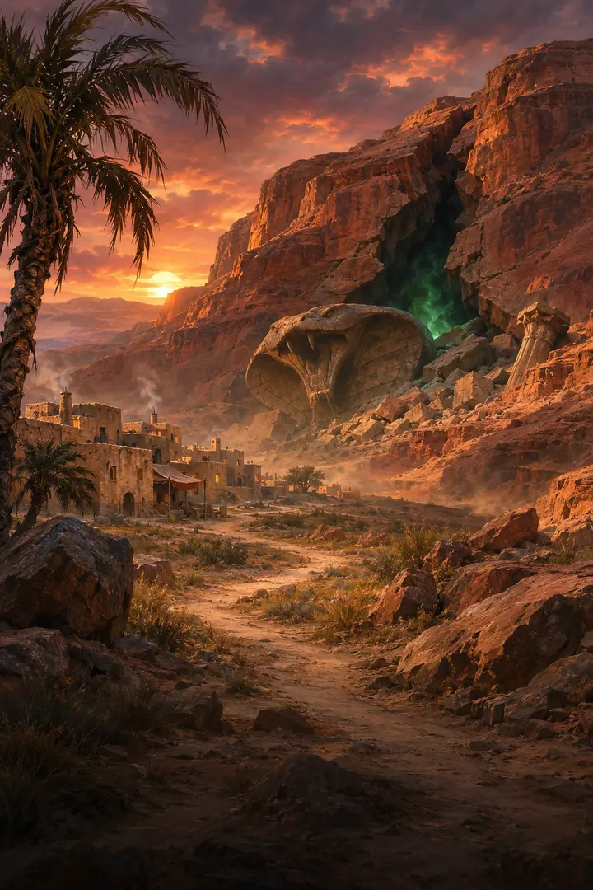
La Tumba de los Reyes Serpiente
Una tumba olvidada bajo las Colinas de Ocre, cerca de Arenaroja.
Toda leyenda empieza con un primer paso
¿Prefieres Android? Descarga la APK (versión de prueba; la web recibe antes las novedades).